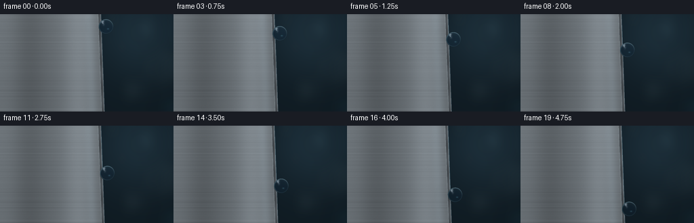
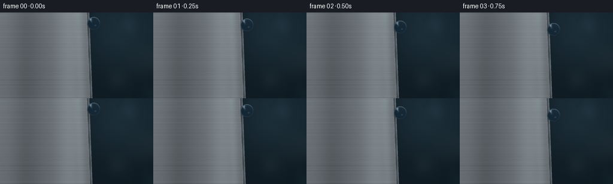

CODING AGENTS AS PIXEL WORLD MODELS
traex/GPT-5.6-Sol · mechanics_0056
点击播放 · 原生 RGB 像素
逐轮保存的候选
回放视频、检查图与代码变化。
每份候选均可单独播放。实际图片检查记录在下方工具轨迹中。
候选 01播放与检查图
点击播放 · 原生 RGB 像素


展开代码变化
--- 上一保存版本
+++ 本次保存版本
@@ -0,0 +1,227 @@
+"""Generate a macro animation of a spherical water drop sliding down aluminum.
+
+The scene is constructed entirely with NumPy/Pillow/OpenCV. It is rendered at
+3x resolution and downsampled, which keeps the sheet edge and the circular drop
+silhouette clean at the requested 256x144 output size.
+"""
+
+from pathlib import Path
+
+import cv2
+import numpy as np
+from PIL import Image, ImageDraw, ImageFilter
+
+import artifact_io
+
+
+CASE_DIR = Path(__file__).resolve().parent
+W, H = 256, 144
+N_FRAMES = 20
+S = 3
+WW, HH = W * S, H * S
+
+
+def front_edge(y):
+ """X position of the front corner of the subtly perspective-slanted sheet."""
+ return 147.2 + 0.037 * (y - H / 2)
+
+
+def outer_edge(y):
+ return front_edge(y) + 4.2
+
+
+def soft_bokeh(base):
+ """Add deliberately out-of-focus workshop reflections to the background."""
+ layer = Image.new("RGBA", (WW, HH), (0, 0, 0, 0))
+ d = ImageDraw.Draw(layer, "RGBA")
+ circles = [
+ (218, 21, 17, (80, 112, 122, 38)),
+ (238, 78, 29, (86, 105, 109, 22)),
+ (195, 113, 18, (116, 139, 139, 22)),
+ (180, 48, 8, (155, 176, 168, 25)),
+ (251, 133, 13, (27, 68, 82, 38)),
+ (165, 9, 10, (132, 160, 160, 18)),
+ ]
+ for cx, cy, r, col in circles:
+ d.ellipse(((cx-r)*S, (cy-r)*S, (cx+r)*S, (cy+r)*S), fill=col)
+ # Faint distant vertical structures, also far outside the focal plane.
+ d.rounded_rectangle((224*S, -12*S, 236*S, 157*S), radius=5*S,
+ fill=(8, 17, 23, 34))
+ d.rounded_rectangle((181*S, 15*S, 186*S, 153*S), radius=3*S,
+ fill=(100, 125, 128, 13))
+ layer = layer.filter(ImageFilter.GaussianBlur(9*S))
+ rgb = Image.fromarray(np.uint8(np.clip(base, 0, 255)), "RGB").convert("RGBA")
+ return np.asarray(Image.alpha_composite(rgb, layer).convert("RGB"), dtype=np.float32)
+
+
+def make_static_scene():
+ rng = np.random.default_rng(5631)
+ yy, xx = np.mgrid[0:HH, 0:WW].astype(np.float32)
+ x = xx / S
+ y = yy / S
+
+ # Dark blue-gray background with a soft diagonal pool of studio light.
+ glow = np.exp(-(((x - 207) / 80) ** 2 + ((y - 23) / 78) ** 2))
+ bottom = y / H
+ base = np.empty((HH, WW, 3), np.float32)
+ base[..., 0] = 12 + 16 * glow + 3 * bottom
+ base[..., 1] = 22 + 24 * glow + 4 * bottom
+ base[..., 2] = 29 + 28 * glow + 4 * bottom
+ base = soft_bokeh(base)
+
+ ef = front_edge(y)
+ eo = outer_edge(y)
+ face = x <= ef
+ bevel = (x > ef) & (x <= eo)
+
+ # Smooth brushed aluminum. Broad vertical reflections establish the metal;
+ # very fine horizontal milling marks keep it from reading as flat gray.
+ broad = (26 * np.exp(-((x - 117) / 25) ** 2)
+ - 17 * np.exp(-((x - 42) / 25) ** 2)
+ + 8 * np.exp(-((x - 8) / 47) ** 2))
+ row_noise = rng.normal(0, 1, HH)
+ row_noise = cv2.GaussianBlur(row_noise[:, None], (1, 9), 0).ravel()
+ row_noise = row_noise / (row_noise.std() + 1e-6)
+ brushing = (1.35 * np.sin(y * 2.77) + 0.75 * np.sin(y * 8.91)
+ + 1.6 * row_noise[:, None])
+ # Slow irregularity parallel to the edge, like a reflected strip light.
+ grain = rng.normal(0, 0.65, (HH, WW)).astype(np.float32)
+ grain = cv2.GaussianBlur(grain, (7, 1), 0)
+ lum = 112 + broad - 10 * (y / H) + brushing + grain
+ metal = np.stack((lum * 0.93, lum * 0.99, lum * 1.035), axis=-1)
+ base[face] = metal[face]
+
+ # The 4-pixel thickness is a distinct darker bevel, with two crisp specular
+ # edge catches. These lines remain visible through the transparent drop.
+ q = np.clip((x - ef) / (eo - ef), 0, 1)
+ bevel_lum = 58 + 42 * q + 19 * np.exp(-((q - 0.12) / 0.15) ** 2)
+ bevel_lum += 7 * np.sin(y * 0.16)
+ bevel_rgb = np.stack((bevel_lum * 0.91, bevel_lum * 0.98,
+ bevel_lum * 1.04), axis=-1)
+ base[bevel] = bevel_rgb[bevel]
+
+ # Hairline studio highlights define the sheet's precision-machined corner.
+ line1 = np.exp(-((x - ef) / 0.45) ** 2)
+ line2 = np.exp(-((x - eo) / 0.38) ** 2)
+ base += line1[..., None] * np.array([28, 31, 32], np.float32)
+ base += line2[..., None] * np.array([42, 49, 51], np.float32)
+
+ # A subdued reflected stripe near the edge adds metallic depth.
+ stripe = np.exp(-((x - (ef - 13)) / 7.0) ** 2) * face
+ base += stripe[..., None] * np.array([8, 10, 11], np.float32)
+ return np.uint8(np.clip(base, 0, 255))
+
+
+def add_wet_track_and_shadow(scene, cy, radius):
+ """Subtle wet seam above the moving drop and its contact shadow."""
+ image = scene.astype(np.float32).copy()
+ yy, xx = np.mgrid[0:HH, 0:WW].astype(np.float32)
+ x, y = xx / S, yy / S
+ eo = outer_edge(y)
+
+ # The film is intentionally faint: a narrow specular interruption rather
+ # than a painted motion trail. It lengthens naturally as the drop descends.
+ upper = 14.0
+ lower = cy - radius * 0.67
+ if lower > upper:
+ end_fade = np.clip((lower - y) / 2.2, 0, 1)
+ start_fade = np.clip((y - upper) / 4.0, 0, 1)
+ track = np.exp(-((x - (eo + 0.05)) / 0.48) ** 2)
+ track *= (y >= upper) * (y <= lower) * end_fade * start_fade
+ image += track[..., None] * np.array([12, 18, 20], np.float32)
+
+ cx = outer_edge(cy) + radius * 0.64
+ # Contact shadow falls mostly onto the face and bevel, not into free space.
+ dx, dy = x - (cx - 2.6), y - (cy + 1.2)
+ shadow = np.exp(-(dx*dx / (radius*0.92)**2 + dy*dy / (radius*0.82)**2) * 2.0)
+ on_sheet = np.clip((eo + 1.0 - x) / 2.0, 0, 1)
+ image *= (1.0 - (0.27 * shadow * on_sheet))[..., None]
+
+ # A tiny dark contact seam anchors the otherwise perfectly round drop.
+ contact = np.exp(-((x - eo) / 0.65) ** 2 - ((y - cy) / 3.8) ** 2)
+ image *= (1.0 - 0.18 * contact[..., None])
+ return np.uint8(np.clip(image, 0, 255))
+
+
+def render_drop(scene, cy, radius=10.8):
+ """Render a circular, refractive water sphere over the current scene."""
+ cx = outer_edge(cy) + radius * 0.64
+ cxh, cyh, rh = cx*S, cy*S, radius*S
+ pad = 2*S
+ x0 = max(0, int(np.floor(cxh-rh-pad)))
+ x1 = min(WW, int(np.ceil(cxh+rh+pad+1)))
+ y0 = max(0, int(np.floor(cyh-rh-pad)))
+ y1 = min(HH, int(np.ceil(cyh+rh+pad+1)))
+ gy, gx = np.mgrid[y0:y1, x0:x1].astype(np.float32)
+ nx = (gx - cxh) / rh
+ ny = (gy - cyh) / rh
+ rho2 = nx*nx + ny*ny
+ inside = rho2 <= 1.0
+ nz = np.sqrt(np.maximum(0.0, 1.0-rho2))
+
+ # Lens mapping: what lies behind the sphere is enlarged and gently shifted,
+ # visibly curving the aluminum edge through the transparent water.
+ map_x = cxh + (gx-cxh) * (0.60 + 0.05*nz) - 1.15*S*nx*nz
+ map_y = cyh + (gy-cyh) * (0.60 + 0.05*nz) - 0.32*S*ny*nz
+ sampled = cv2.remap(scene, map_x, map_y, interpolation=cv2.INTER_LINEAR,
+ borderMode=cv2.BORDER_REFLECT_101).astype(np.float32)
+ transmission = sampled * np.array([0.945, 0.985, 1.025], np.float32)
+ transmission += np.array([0.0, 1.8, 3.8], np.float32)
+
+ # Fresnel reflection strengthens toward the rim. The normal's vertical
+ # direction samples a simple cool studio environment.
+ fresnel = 0.025 + 0.64 * (1.0-nz) ** 2.45
+ sky_mix = np.clip((-ny + 0.15) * 0.62, 0, 1)
+ dark_env = np.array([22, 35, 42], np.float32)
+ light_env = np.array([155, 179, 183], np.float32)
+ reflection = dark_env + sky_mix[..., None] * (light_env-dark_env)
+ water = transmission*(1-fresnel[..., None]) + reflection*fresnel[..., None]
+
+ # Stable camera-facing studio highlights. They remain on the upper-left of
+ # the drop while its refracted contents move, helping it read as liquid.
+ dot = np.maximum(0, nx*(-0.47) + ny*(-0.63) + nz*0.62)
+ spec = dot ** 58
+ broad_spec = np.exp(-(((nx+0.33)/0.20)**2 + ((ny+0.32)/0.30)**2) * 2.2)
+ pinpoint = np.exp(-(((nx+0.43)/0.075)**2 + ((ny+0.43)/0.09)**2) * 2.0)
+ water += (105*spec + 33*broad_spec + 116*pinpoint)[..., None]
+
+ rho = np.sqrt(rho2)
+ rim = np.exp(-((rho-0.935)/0.035)**2)
+ rim_direction = 0.35 + 0.65*np.clip(-0.45*nx-0.5*ny+0.6, 0, 1)
+ water += (rim*rim_direction)[..., None] * np.array([34, 46, 49], np.float32)
+
+ # A restrained lower-right caustic is characteristic of a clear water bead.
+ caustic = np.exp(-(((nx-0.27)/0.19)**2 + ((ny-0.33)/0.13)**2) * 2.0)
+ water += caustic[..., None] * np.array([25, 39, 42], np.float32)
+
+ crop = scene[y0:y1, x0:x1].astype(np.float32)
+ # At supersampled resolution this hard geometric mask becomes a pristine,
+ # constant-radius antialiased circle after final Lanczos downsampling.
+ crop[inside] = water[inside]
+ scene = scene.copy()
+ scene[y0:y1, x0:x1] = np.uint8(np.clip(crop, 0, 255))
+ return scene
+
+
+def make_frames():
+ static = make_static_scene()
+ frames = []
+ for i in range(N_FRAMES):
+ u = i / (N_FRAMES - 1)
+ # Gravity-like easing: always moving, gradually gathering speed. The
+ # sphere's radius is intentionally invariant throughout the shot.
+ cy = 18.0 + 105.0 * (0.23*u + 0.77*u**1.38)
+ radius = 10.8
+ scene = add_wet_track_and_shadow(static, cy, radius)
+ scene = render_drop(scene, cy, radius)
+ frame = Image.fromarray(scene, "RGB").resize((W, H), Image.Resampling.LANCZOS)
+ frames.append(np.asarray(frame, dtype=np.uint8))
+ return np.stack(frames, axis=0)
+
+
+if __name__ == "__main__":
+ frames = make_frames()
+ assert frames.shape == (20, 144, 256, 3)
+ assert frames.dtype == np.uint8
+ artifact_io.save(frames, CASE_DIR)
+ print(f"saved {len(frames)} RGB frames to {CASE_DIR}")
可观测工具轨迹
实际执行的命令与返回图片。
命令 1exit 0
/bin/bash -lc "cat prompt.txt && printf '\\n--- GENERATION_RULES ---\\n' && cat GENERATION_RULES.md && printf '\\n--- TASK_SPEC ---\\n' && cat task_spec.json"
命令 2exit 1
/bin/bash -lc "find . -maxdepth 2 -type f -printf '%p\\n' | sort && printf '\\n--- tools ---\\n' && command -v ffmpeg && command -v python3 && ffmpeg -version | head -3"
命令 3exit 0
/bin/bash -lc "sed -n '1,240p' artifact_io.py; printf '\\n--- python capabilities ---\\n'; python3 - <<'PY' mods=['numpy','PIL','cv2','imageio','scipy'] for m in mods: try: x=__import__(m); print(m,'OK',getattr(x,'__version__','')) except Exception as e: print(m,'NO',e) PY"
命令 4exit 0
/bin/bash -lc "python3 generate.py && python3 - <<'PY'
from pathlib import Path
import numpy as np
from PIL import Image
p=Path('.')
z=np.load('pixels.npz')['pixels']
print('pixels',z.shape,z.dtype,'range',hex(int(z.min())),hex(int(z.max())))
print('frames',len(list((p/'frames').glob('*.png'))))
for f in ['inspection.png','transition_check.png','index.html','pixels.npz']:
q=p/f; print(f,q.stat().st_size)
# Temporal checks: changing pixels and droplet ROI estimates
im=np.stack([np.array(Image.open(f'frames/{i:02d}.png')) for i in range(20)])
print('mean abs adjacent deltas', [round(float(np.abs(im[i].astype(float)-im[i-1]).mean()),3) for i in range(1,20)])
PY"命令 5exit 0
/bin/bash -lc "find . -maxdepth 2 -type f -printf '%p %s bytes\\n' | sort"
命令 6exit 0
/bin/bash -lc "python3 -m py_compile generate.py && python3 - <<'PY'
import numpy as np
from PIL import Image
ims=np.stack([np.asarray(Image.open(f'frames/{i:02d}.png').convert('RGB')) for i in range(20)])
# Reconstruct and verify artifact packing against PNG files.
p=np.load('pixels.npz')['pixels']
unpacked=np.stack([((p>>16)&255),((p>>8)&255),(p&255)],axis=-1).transpose(2,0,1,3).astype(np.uint8)
print('shape/dtype:',ims.shape,ims.dtype)
print('packed artifact exact:',np.array_equal(ims,unpacked))
# Calculated sphere centers and travel, in final-frame coordinates.
u=np.arange(20)/19
cy=18+105*(.23*u+.77*u**1.38)
print('drop center y:',np.round(cy,2).tolist())
print('step sizes:',np.round(np.diff(cy),2).tolist())
print('fully in frame:',bool(np.all((cy-10.8>=0)&(cy+10.8<144))))
print('RGB channel std:',np.round(ims.reshape(-1,3).std(0),2).tolist())
PY"保存候选 1 份；完成命令 6 次；可验证图片返回 0 张。原始 API 响应与完整日志保留在本地。